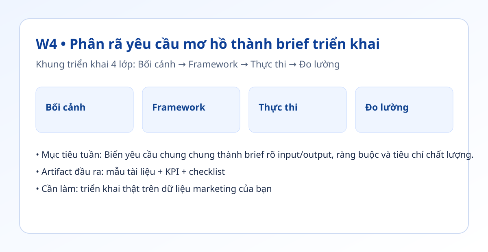

Hình trực quan mô-đun

Bối cảnh thực tế
- Một brief mơ hồ dẫn đến đầu ra mơ hồ, dù dùng người hay AI.
- Nếu brief không có dữ liệu đầu vào và tiêu chí đạt, vòng sửa sẽ kéo dài.
- Tuần này bạn chuẩn hóa mẫu brief dùng cho toàn bộ tác vụ marketing lặp lại.
Khung tư duy cốt lõi
- Khung 7 thành phần: Vấn đề, Đối tượng, Mục tiêu, Đầu vào, Đầu ra, Ràng buộc, KPI.
- Định nghĩa chất lượng theo dạng đạt/không đạt thay vì nhận xét cảm tính.
- Mỗi brief chỉ tập trung 1 mục tiêu chính để dễ đo tác động.
Quy trình triển khai chi tiết
- Bước 1: Thu thập 3 yêu cầu marketing mơ hồ đang xử lý hàng tuần.
- Bước 2: Với từng yêu cầu, điền đủ 7 thành phần trong mẫu brief chuẩn.
- Bước 3: Chuyển đầu ra mong muốn thành format cụ thể: độ dài, giọng, CTA, cấu trúc.
- Bước 4: Bổ sung danh sách dữ liệu bắt buộc trước khi sản xuất.
- Bước 5: Gắn checklist đạt/không đạt để QA nhanh ở cuối luồng.
- Bước 6: Chạy thử 1 tuần và đo số vòng sửa trước/sau khi chuẩn hóa brief.
Tình huống nhỏ với số liệu
| Chỉ số | Trước | Sau |
|---|---|---|
| Số vòng sửa trung bình | 3 vòng/bài | 1 vòng/bài |
| Thời gian brief | 10 phút | 25 phút |
| Thời gian sửa lại | 95 phút | 30 phút |
Kết luận: Tốn thêm thời gian setup brief ban đầu nhưng giảm mạnh rework và cải thiện độ nhất quán đầu ra.
Sản phẩm bàn giao tuần này
- Template brief 1 trang dùng chung.
- Kho 3 brief mẫu đã điền đầy đủ.
- Checklist đạt/không đạt cho từng loại đầu ra.
Bài tập thực hành (45-60 phút)
- Chọn 3 tác vụ thật trong tuần và viết lại thành 3 brief chuẩn.
- Nhờ 1 người khác hoặc AI chạy theo brief để kiểm tra độ rõ.
- Nếu kết quả lệch, sửa brief thay vì sửa đầu ra.
Thang đo hoàn thành
| Mức | Mô tả |
|---|---|
| Mức 0 | Brief thiếu đầu vào hoặc đầu ra |
| Mức 1 | Có đủ thành phần nhưng thiếu KPI |
| Mức 2 | Có KPI + checklist đạt/không đạt |
| Mức 3 | Áp dụng thực tế và giảm vòng sửa |
Lỗi thường gặp
- Brief quá dài nhưng thiếu điểm quyết định.
- Không định nghĩa rõ format đầu ra.
- Bỏ qua ràng buộc thương hiệu/pháp lý.
Video thực hành (tùy chọn)
Phần học chính đã đầy đủ bằng văn bản và ví dụ. Nếu bạn muốn xem thao tác thực tế, dùng các video gợi ý sau:
Đánh dấu tiến độ
Tuần này chưa hoàn thành
Đã hoàn thành tuần 4